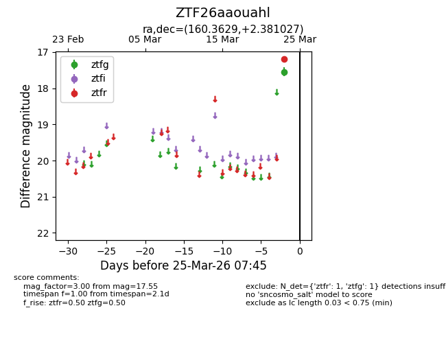
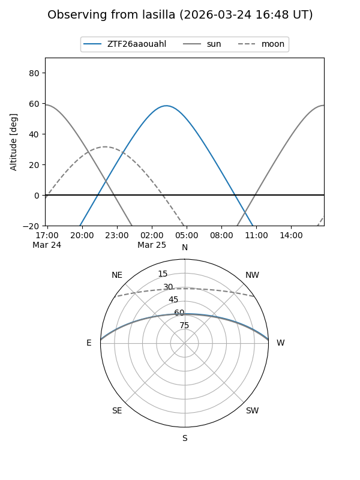
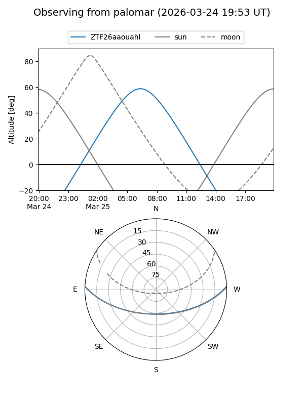

ZTF26aaouahl
Target ZTF26aaouahl at 2026-03-25 07:48
Aliases and brokers:
FINK: link
Lasair: link
ALeRCE: link
alt names
ZTF26aaouahl (ztf,fink_ztf)
Coordinates:
equatorial (ra, dec) = 160.3629,+2.38103
equatorial (HMS+DMS) = 10:41:27.10,+02:22:51.70
galactic (l, b) = (245.8334,+50.25814)
Flags:
Photometry:
last ztfg=17.55, ztfr=17.18
1 ztfg, 1 ztfr detections
Lightcurve

Visibility


Additional plots